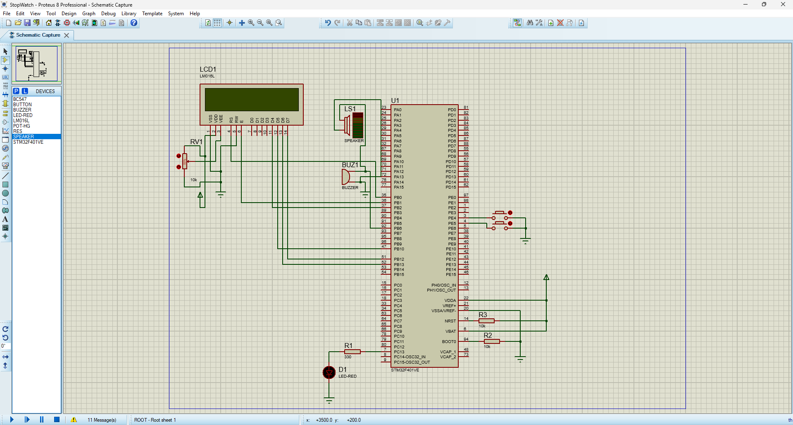

Proteus schematic overview
The full circuit wiring: STM32F401VETx, LCD, buttons, LED, buzzer, speaker model, reset/boot resistors, power, and ground.
What The Demo Shows
The real STM32 firmware uses TIM2 for millisecond stopwatch timing, EXTI4 for the Start/Pause button, SysTick for helper timing, GPIO for LCD/LED/buzzer control, and a main loop for the high-level behavior. This web demo mirrors that behavior with JavaScript so the project can be understood without opening Proteus.
Simulation Evidence

The full circuit wiring: STM32F401VETx, LCD, buttons, LED, buzzer, speaker model, reset/boot resistors, power, and ground.

The LCD shows elapsed time and LED delay while the simulated hardware runs the stopwatch firmware behavior.

The configured GPIO and timer pins used by the project, including PE4, PE5, PC13, PB6, and LCD control lines.
Runtime Trace